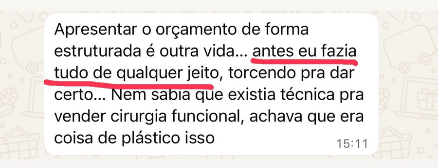

calendar_month Domingo 17 de maio, das 08h00 às 12h00
videocam Ao vivo pelo Zoom
medical_services De Cirurgião para Cirurgião
*Não atendemos às necessidades de veterinários ou dentistas.
Quem já aplicou

Enquanto você opera, o paciente está dormindo! Ele não sabe avaliar sua habilidade como médico cirurgião.
Competência técnica é fundamental, mas não é suficiente para garantir que seu consultório "cresça naturalmente".
Pacientes escolhem cirurgiões que:
o acolhem com confiança e clareza
não hesitam ao passar o orçamento
o acompanham adequadamente no perioperatório
Ter maior volume de cirurgias não é sobre convencer o paciente entre operar ou não operar.
É sobre convencer o paciente a operar com você e não com outro cirurgião!
É por isso que no Código do Consultório Cirúrgico, te ensinaremos os três ajustes que te permitirão dobrar seu volume de cirurgias eletivas:
Como fazer o paciente se sentir verdadeiramente acolhido em todas as etapas do atendimento. Aqui você vira o dono do paciente.
Vamos te mostrar um modelo validado de preparação e apresentação de orçamento de cirurgias.
Como acompanhar o paciente durante sua tomada de decisão.
Se o conhecimento que você adquirir aqui te auxiliar a fechar uma única cirurgia, você terá quitado inúmeras vezes o valor do seu investimento:
Acesso ao vivo ao conteúdo masterclass.
Acesso à gravação do conteúdo por 7 dias.
Se você comprovar que participou da imersão ao vivo conosco e achar que o conteúdo Não Valeu o Seu Investimento, devolvemos seu investimento de forma integral em até 7 Dias depois da data da Masterclass!
Cirurgião Plástico formado pela USP, sócio diretor do Day Hospital SelfDay.
Cirurgião de Cabeça e Pescoço, sócio fundador do Núcleo Integrado de Cirurgia e Endocrinologia.
Urologista e Cirurgião Robótico, além de sócio fundador da Clínica URO.
Cirurgião Vascular, sócio da Clínica CLAP e sócio fundador da CLAP Varizes.